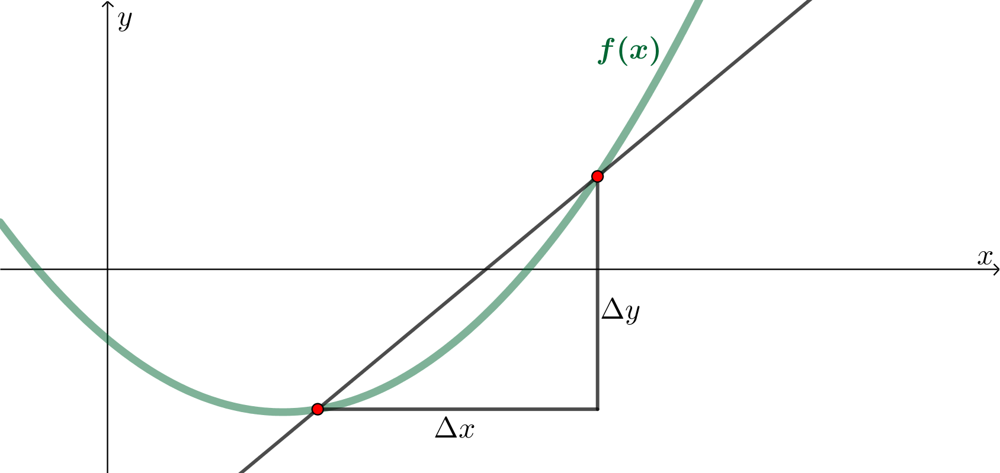
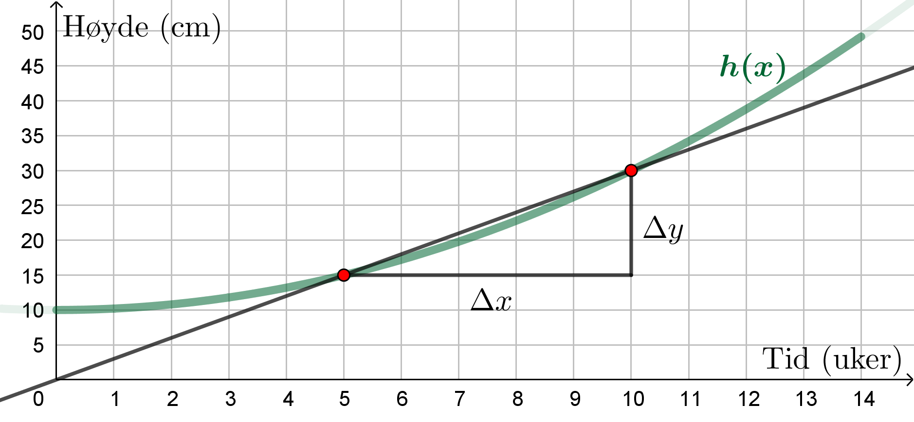
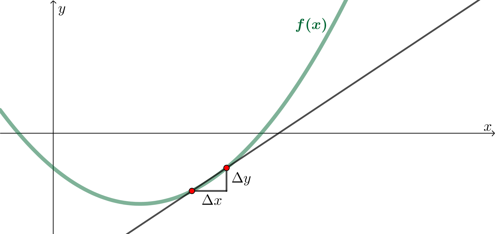
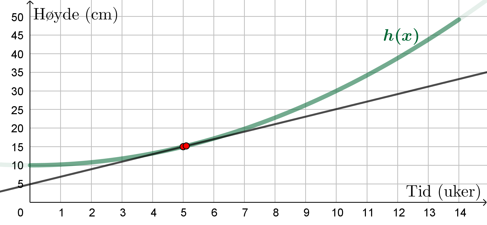
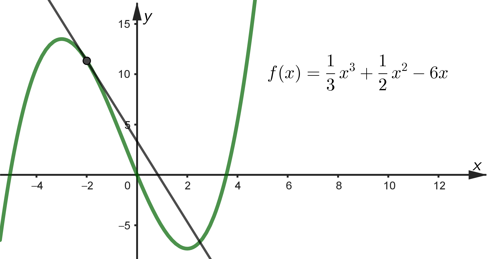
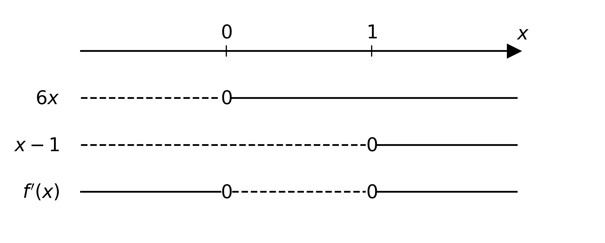
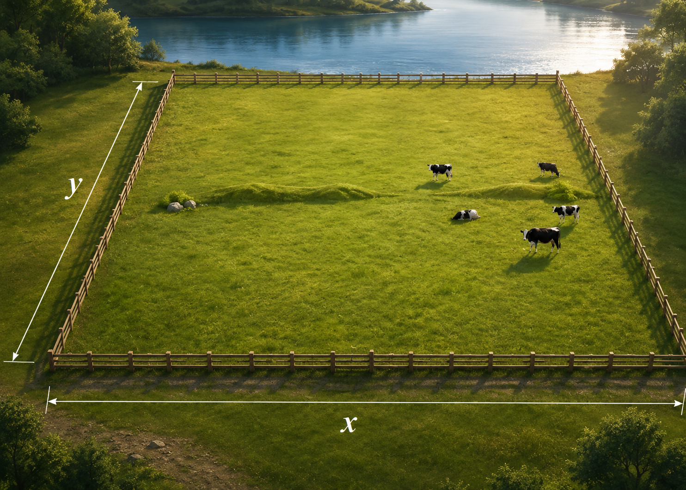
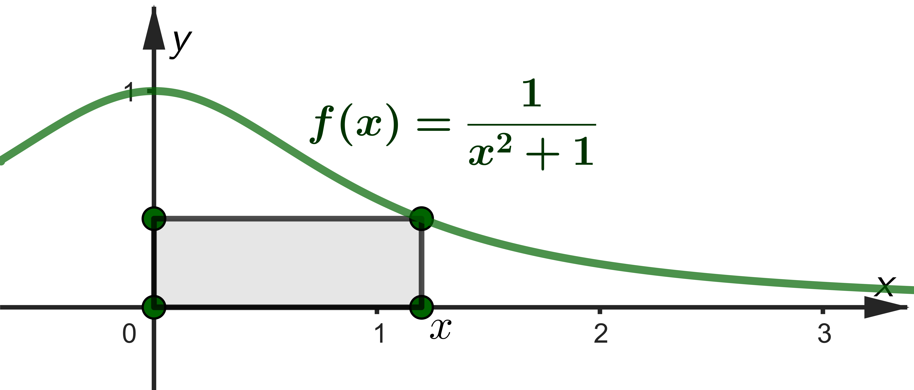
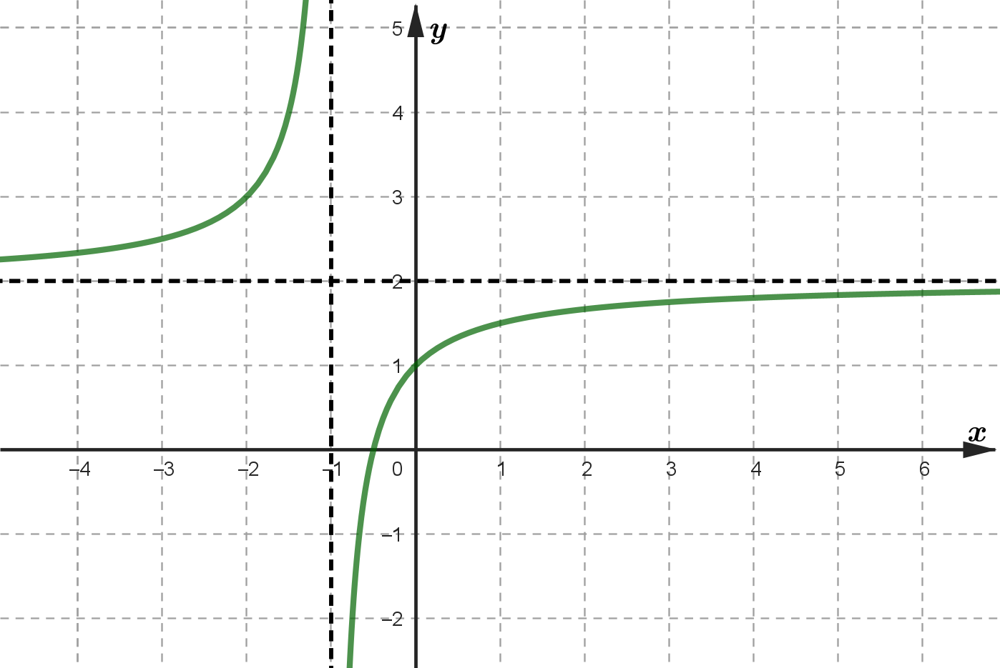

Funksjonsdrøfting
Du skal ha kompetanse om
- vekstfart og derivasjon
- gjennomsnittlig vekstfart
- momentan vekstfart
- derivasjonsregler
- tangenter
- ekstremalpunkter
- monotoniegenskaper
- optimering
- bruk av derivasjon for å optimere
- bruk av programmering for å derivere
- rasjonale funksjoner
- potensfunksjoner
- eksponentialfunksjoner
- vekstfaktor
- programmering med prosentvis endring
Vekstfart og derivasjon
Vekstfart
Gjennomsnittlig vekstfart: Hvor mye \(y\) endrer seg i forhold til \(x\) mellom to punkter, \(\frac{\Delta y}{\Delta x}\).
Eksempel
Grafen viser høyden til en plante \(x\) uker etter at vi har plantet den.
Bestem den gjennomsnittlge vekstfarten mellom uke 5 og uke 10.Gi en praktisk tolkning av svaret.
\[ \frac{\Delta y}{\Delta x} = \frac{30 - 15}{10 - 5} = \frac{15}{5} = 3 \]
Praktisk tolkning: I gjennomsnitt vokser planta 3 cm per uke mellom uke 5 og uke 10.

I praksis kan vi bestemme den momentane vekstfarten ved å se på to punkter som ligger veldig nærme hverandre.Eksempel
Grafen viser høyden til en plante \(x\) uker etter at vi har plantet den.
Bestem den momentane vekstfarten etter 5 uker.Gi en praktisk tolkning av svaret.
Ved å tegne en linje som går gjennom to punkter som ligger nær \(x=5\) kan vi se hvor bratt grafen er der. Vi ser at stigningstallet er omtrent 2.
Altså er den momentane vekstfarten ca. 2.
Praktisk tolkning: Etter 5 uker er planta i ferd med å vokse med 2 cm per uke.
Praktisk tolkning: Etter 5 uker er planta i ferd med å vokse med 2 cm per uke.
Derivasjon
Den deriverte i et punkt er det samme som den momentane vekstfarten i punktet.Den deriverte til \(f(x)\) når \(x=a\) skrives som \(f'(a)\).
Eksempel
Høyden til planta i de forrige eksemplene er gitt ved \[ h(x) = 0\text{,}20x^2 + 10 \] Bestem \(f'(5)\) ved regning.
$$
\begin{align}
f'(5) = \frac{\Delta y}{\Delta x} \approx \frac{f(5\text{,}1) - f(5)}{5\text{,}1 - 5} &= \frac{0\text{,}20\cdot 5\text{,}1^2 + 10 - (0\text{,}20\cdot 5^2 + 10)}{0\text{,}1} \\
&= \frac{5\text{,}202 + 10 - 5 - 10}{0\text{,}1} \\
&= \frac{0\text{,}202}{0\text{,}1} \\
&= 2\text{,}02
\end{align}
$$
Derivasjonsregler
| \(f(x) = ax^n\) | \(g(x) = ax + b\) | \(h(x) = a\) |
| \(f'(x) = a\cdot n x^{n-1}\) | \(g'(x) = a\) | \(h'(x) = 0\) |
Eksempel
| \(f(x) = 3x^5\) | \(g(x) = 3x + 7\) | \(h(x) = 42\) |
| \(f'(x) = 15 x^{4}\) | \(g'(x) = 3\) | \(h'(x) = 0\) |
Eksempel
Høyden til planta i de forrige eksemplene er gitt ved \[ h(x) = 0\text{,}20x^2 + 10 \] Bestem \(f'(5)\) ved regning.
Derivasjonsreglene gir
\[ f'(x) = 0\text{,}20\cdot 2x + 0 = 0\text{,}40x \]
Altså er
\[ f'(5) = 0\text{,}40 \cdot 5 = 2\text{,}0 \]
Eksempel

Bestem likningen til tangenten i punktet \((-2, f(-2))\).
Tangenten er gitt av ett-punktsformelen:
\[ y - y_1 = a(x - x_1) \]
\(y\)-verdien i punktet er
\[ y_1 = f(-2) = \frac{1}{3}\cdot (-2)^3 + \frac{1}{2}\cdot (-2)^2 - 6 \cdot (-2) = -\frac{8}{3} + 2 + 12 = \frac{34}{3} \]
Derivasjonsreglene gir
\[ f'(x) = \frac{1}{3}\cdot 3x^2 + \frac{1}{2}\cdot 2x - 6 = x^2 + x - 6 \]
Dermed er stigningstallet
\[ a = f'(-2) = (-2)^2 + (-2) - 6 = 4 - 2 - 6 = - 4 \]
Likningen til tangeten er dermed
$$
\begin{align}
y - y_1 &= a(x - x_1) \\
y - \frac{34}{3} &= -4(x - (-2)) \\
y &= -4x - 8 + \frac{34}{3} \\
y &= -4x + \frac{10}{3}
\end{align}
$$
Ekstremalpunkter og monotoniegenskaper
Ekstremalpunkter: Der vekstfarten er null. For funksjonen over gjelder \(f'(1)=f'(3)=f'(5) = 0\).
For funksjonen over gjelder \(f'(1)=f'(3)=f'(5) = 0\).Monotoniegenskaper: Beskrivelse av hvor grafen vokser, og hvor den synker.
Eksempel
\[ f(x) = 2x^3 - 3x^2 \] Bestem monotoniegenskapene og eventuelle ekstremalpunkter på grafen til \(f(x)\).
$$
\begin{align}
f'(x) &= 0\\
6x^2 - 6x &= 0\\
6x(x - 1) &= 0
\end{align}
$$
Vi lager fortegnsskjema
Grafen har toppunkt i \( (0, f(0)) = (0, 0) \) og bunnpunkt i \( (1, f(1)) = (1, -1) \).

Monotoniegenskaper: Gafen vokser når \( x < 0 \) eller \(x > 1 \), og den synker når \( 0 < x < 1 \).Grafen har toppunkt i \( (0, f(0)) = (0, 0) \) og bunnpunkt i \( (1, f(1)) = (1, -1) \).
Optimering
Eksempel

Gregersen har 100 meter med gjerde han skal bruke for å gjerde inn kuene sine. Inngjerdingen skal være rektangulær.Hvor bred \(x\) og hvor lang \(y\) må inngjerdingen være hvis arealet skal bli størst mulig?
Arealet er \(A = x \cdot y \).
Sammenhengen mellom \(x\) og \(y\) er gitt av omkretsen, \[ 2x + 2y = 100 \;\; \rightarrow \;\; y = 50 - x \] Dermed kan arealet uttrykkes ved \[ A(x) = x \cdot y = x(50 - x) = 50x - x^2 \] Toppunktet er gitt ved \[ A'(x) = 50 - 2x = 0 \;\; \rightarrow\;\; x = 25 \] Dermed må både bredden og lengden være \(25 \text{ meter} \).
Sammenhengen mellom \(x\) og \(y\) er gitt av omkretsen, \[ 2x + 2y = 100 \;\; \rightarrow \;\; y = 50 - x \] Dermed kan arealet uttrykkes ved \[ A(x) = x \cdot y = x(50 - x) = 50x - x^2 \] Toppunktet er gitt ved \[ A'(x) = 50 - 2x = 0 \;\; \rightarrow\;\; x = 25 \] Dermed må både bredden og lengden være \(25 \text{ meter} \).
Eksempel
Bruk programmering for å løse eksempelet over.
Arealet er \(A = x \cdot y \).
Sammenhengen mellom \(x\) og \(y\) er gitt av omkretsen, \[ 2x + 2y = 100 \;\; \rightarrow \;\; y = 50 - x \]
Sammenhengen mellom \(x\) og \(y\) er gitt av omkretsen, \[ 2x + 2y = 100 \;\; \rightarrow \;\; y = 50 - x \]
for x in range(1, 50):
y = 50 - x
A = x*y
print(x, y, A)
1 49 49
2 48 96
3 47 141
4 46 184
...
22 28 616
23 27 621
24 26 624
25 25 625
26 24 624
27 23 621
...
47 3 141
48 2 96
49 1 49Eksempel

Et raktangel ligger under grafen til \(f(x)\). Rektangelet har hjørner i \((0, 0)\), \((x, 0)\), \((x, f(x))\) og \((0, f(x))\).Vis hvordan vi kan bruke programmering for å bestemme \(x\) slik at arealet blir størst mulig.
Arealet er \(A = x \cdot f(x) \).
def f(x):
return 1/(x**2 + 1)
def A(x):
return x*f(x)
x = 0 # Startverdi for x
while A(x + 0.1) > A(x): # Så lenge arealet vokser
x = x + 0.1 # x-verdien øker
print(x, A(x))
0.9999999999999999 0.5Rasjonale funksjoner
Rasjonale funksjoner har uttrykk med \(x\) i nevneren.De enkeleste rasjonale funksjonene er på formen \[ f(x) = \frac{ax + b}{cx + d} \] hvor grafen har følgende egenskaper:
- nullpunkt når teller er null; \(ax + b = 0\)
- vertikal asymptote når nevner er null; \(cx + d = 0\)
- horisontal asymptote når \(x\rightarrow \infty\), \(y = \frac{a\cdot \infty + b}{c \cdot \infty + d} = \frac{a}{c}\)
- skjæring med \(y\)-aksen når \(x=0\), \(y=f(0)=\frac{b}{d}\)
Eksempel

Eksempel

Bestem funksjonsuttrykket.
Den horisontale asymptoten gir
\[ f(x) = \frac{2x + b}{x + d} \]
Den vertikale asymptoten gir
\[ f(x) = \frac{2x + b}{x + 1} \]
Skjæringen med \(y\)-aksen gir
\[ f(x) = \frac{2x + 1}{x + 1} \]
Eksempel
En rasjonal funksjon har følgende egenskaper:- vertikale asymtoter når \(x = 2\) og når \(x = 3\)
- nullpunkt når \(x = -1\)
De vertikale asymptoten gir
\[ f(x) = \frac{ax + b}{(x-2)(x-3)} \]
Nullpunktet gir
\[ f(x) = \frac{x + 1}{(x-2)(x-3)} \]
Potensfunksjoner
Potensfunksjoner er på formen \(f(x)=ax^n\), hvor \(n\) kan være en brøk eller et desimaltall.Eksempel
Sammenhengen mellom rundetiden \(T\) og avstanden \(d\) til sola for en planet er \[ T = d^{\frac{3}{2}} \] hvor \(T\) måles i år og \(d\) måles i AU (astronomisk enhet, hvor 1 AU er avstanden mellom jorda og sola).Avstanden mellom Jupiter og sola er omtrent 5 AU.
Bestem rundetiden til Jupiter.
\[ T = 5^{\frac{3}{2}} = \left(5^3\right)^{\frac{1}{2}} = 125^{\frac{1}{2}} \approx 121^{\frac{1}{2}} = 11 \text{ år} \]
(Med kalkulator får vi \(11\text{,}2 \text{ år}\) ).
Eksempel
Sammenhengen mellom rundetiden \(T\) og avstanden \(d\) til sola for en planet er \[ T = d^{\frac{3}{2}} \] hvor \(T\) måles i år og \(d\) måles i AU (astronomisk enhet, hvor 1 AU er avstanden mellom jorda og sola).Saturn bruker omtrent 30 år på et omløp rundt sola.
Bestem avstanden mellom Saturn og sola.
Vi må snu om på formelen
\[ T = d^{\frac{3}{2}} \;\; \rightarrow \;\; T^{2} = d^3 \;\; \rightarrow \;\; T^{\frac{2}{3}} = d \]
Avstanden blir dermed
\[ d = 30^{\frac{2}{3}} = \left( 30^2 \right)^{\frac{1}{3}} = 900^{\frac{1}{3}} \approx 1000^{\frac{1}{3}} = 10 \text{ AU} \]
(Med kalkulator får vi \(9\text{,}7 \text{ AU}\). )
Eksponentialfunksjoner
Eksponentialfunksjoner er på formen \(f(x)=a \cdot k^x\).Eksponentialfunksjoner har følgende egenskaper
- skjæringen med \(y\)-aksen ("startverdien") er \(y=f(0)=a\)
- vekstfaktoren er \(k\)
Når noe synker med \(p\) % er vekstfaktoren \(k=1 - p %\).
Eksempel
Folketallet i verden øker med 1,6 % per år.I begynnelsen av år 2000 var folketallet i verden omtrent 6,1 milliarder.
Bestem folketallet i begynnelsen av år 2030.
\[ 6\text{,}1 \cdot 1\text{,}016^{30} = 9\text{,}8 \text{ milliarder} \]
Eksempel
Ole kjøper en ny bil til 500 000 kr.Verdien av bilen faller med 10 % hvert år.
Bestem verdien etter 10 år.
\[ 500\,000 \cdot 0\text{,}90^{10} = 174\,339 \text{ kr} \]
Eksempel
I år 2000 hadde Ole en årslønn på 500 000 kr. Hvert år har årslønna hans økt med 5 %.Skriv et program som beregner hvor mye han tilsammen tjente fra år 2000 til år 2025.
L = 500000 # Startverdi lønn
S = L # Summen av lønna
k = 1.05 # Vekstfaktor
for år in range(2000, 2026):
print(år, round(L), round(S))
L = L*k # Lønna øker med 5 %
S = S + L # Summen øker med den nye årslønna
2000 500000 500000
2001 525000 1025000
2002 551250 1576250
...
2020 1326649 17859626
2021 1392981 19252607
2022 1462630 20715238
2023 1535762 22250999
2024 1612550 23863549
2025 1693177 25556727
Merk: Kommandoen "round(...)" i eksempelet over runder av tallene (tar bort desimalene). Dette er ikke nødvendig, men det blir litt ryddigere/penere utskrift.
Eksempel
I en vanntank renner det hver minutt inn 20 liter vann. Samtidig renner 5 % av vannet i tanken ut hvert minutt gjennom et lite hull i bunnen av tanken. Ved \(t=0 \text{ min.}\) er det 1000 liter vann i tanken.Hvor lang tid tar det før det er 500 liter vann i tanken?
V = 1000 # Startverdi
t = 0 # Starttid
while V > 500: # Så lenge det er mer enn 500 liter vann i tanken
t = t + 1 # Tiden øker
V = V*0.95 + 20 # Vannmengden minker med 5 % og øker med 20 liter
print(t, V)
1 970
2 942
3 914
4 889
...
32 516
33 510
34 505
35 500